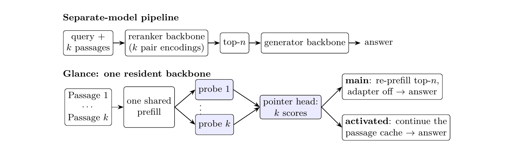
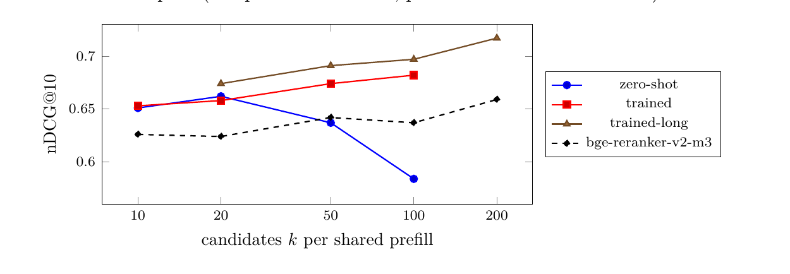

Contents · 12 sections
1What problem is it solving?2The overall pipeline3How do the scoring questions and the scoring head produce a score?4How do the scoring questions share a cache on a hybrid backbone?5Does reading everything once cost quality?6How many passages can one read handle?7Can the generator use the passages it picks?8How does one model switch between ranking and answering?9Can the re-read step be skipped too?10Where I see the limits11How a search or RAG team could try it12VerdictSHARE
RAG systems usually serve a reranker and a generator side by side, and the candidate passages are read once by each model. Glance starts from the idea that the generator reads these passages anyway, so it may as well rank them. It prefills all candidate passages into the KV cache once and attaches a short scoring prompt for each passage on top of that shared cache. A small set of LoRA weights and a scoring head turn each prompt into a relevance score. Then the LoRA is switched off, and the same model reads the selected passages and writes the answer. Each extra decision skill costs about 0.1 GiB of memory. After brief fine-tuning on MS MARCO, it reaches nDCG@10 of 0.741 on SciFact, against 0.721 for the dedicated reranker bge-reranker-v2-m3. The evaluation covers only two retrieval datasets and one model family, but serving one fewer resident model has a direct effect on serving cost.
Teams running RAG services should read this one, because it offers a deployment plan you can price directly: one fewer resident reranker model, no loss in ranking quality, and slightly better answers. The cost is stated just as clearly: per query, on the same hardware, a dedicated cross-encoder is still about 10 times faster. The core idea: for ranking, all candidate passages are prefilled once. Each passage is scored by a short question of about 30 tokens (called a scoring question below), and a small scoring head reads out the answer to that question. The same 9B model still writes the final answer. On HotpotQA, answering from the 3 passages Glance picks gives an F1 0.045 higher than answering from the 3 passages a cross-encoder picks, and this gap holds up statistically. With 200 candidates, its nDCG@10 is still rising, 0.058 above the cross-encoder.
What problem is it solving?
Glance removes the second model in the RAG pipeline. The usual setup has BM25 retrieve 20 passages; a cross-encoder pairs the query with each passage and scores every pair; the top 3 go to the generator, which reads those 3 passages again from scratch. Here is how the two pipelines handle one QA query (illustrative):
| Step | Separate models | Glance |
|---|---|---|
| Models resident in GPU memory | reranker + generator | the generator only, plus a small module of about 0.1 GiB |
| How the 20 candidates are read | the reranker pairs the query with each passage, 20 reads | the generator reads the 20 passages concatenated, 1 read |
| How scores come out | one score per pair | each passage gets a short question that yields one score |
| Before answering | the generator reads the top 3 again | the same model reads the top 3 again |
The difference between 20 reads and 1 read in that table is the starting point of the paper. The generator has to read the passages anyway. If scoring can reuse what the generator computed while reading them, there is no need to keep a second model resident. There are two hard parts: after reading 20 passages in one go, how do you get a separate score for each passage, and once the model has a ranking skill, can it still write answers normally?
The overall pipeline

Glance runs in four steps:
- Concatenate the k retrieved passages as "[Passage 1] passage 1 … [Passage k] passage k" and prefill them once, giving one shared KV cache.
- Branch k short questions from the end of that cache. Question i asks whether passage i contains information that answers or supports the query. The paper calls these short questions probes, and we call them scoring questions below. Each is about 30 tokens, and the k of them run together in one batch without seeing each other.
- A scoring head (the paper calls it a pointer head, 256-dimensional) reads the result of each scoring question, giving k relevance scores, and the top n passages are kept.
- With the LoRA switched off, the same model prefills the top n passages again and writes the answer. The other option is to continue directly from the cache built in step 1, covered later.
The key split is this: passage content is computed once, and each passage's score is computed separately. Twenty passages cost one long prefill plus 20 short scoring questions, not 20 full forward passes over "query plus one passage".
How do the scoring questions and the scoring head produce a score?
Glance gives each passage a yes/no question, and the probability of true is that passage's relevance. The readout reuses the "decision mode" of the Kev runtime (an inference runtime the paper cites). The model generates no text. The input follows a fixed format: first the shared content, then the question, then each option wrapped in two special markers, <opt> and </opt>, and finally a special marker <decide>. The position of <decide> is where the model gives its judgment, which we call the decision slot below; each </opt> is the end marker of its option. The scoring head is a small 256-dimensional network. Its inputs are the hidden state at the decision slot and the hidden state at each option's end marker, and its output is a set of softmax probabilities over the options. The paper gives only the inputs and outputs of this head and does not spell out how it compares the two hidden states internally. For a yes/no question the options are false and true. Hoot says

Glance's contribution is scoring every passage from a single prefill over all of them. The head gives false and true one score each, and after softmax P(true) depends only on their gap. Illustrative: passage 7 has a gap of 2.44, P ≈ 0.92; passage 12, an unrelated namesake, has −2.44, P ≈ 0.08. The paper does not detail how the head produces the two scores. Drag the slider to relate gap and probability.
Source
illustrative example of the decision-mode readout in the paper's §3An example (illustrative): among 20 passages, passage 7 states the answer, and its scoring question reads out a true probability of 0.92; passage 12 is about a different person with the same name and reads out 0.08. Sorting by probability puts passage 7 near the top. No token is generated at any point, so one decision costs one prefill.
Only two things are trained: a rank-16 LoRA and this scoring head. The 9B backbone stays fully frozen.
Why not feed each passage as its own input and ask once per passage? That also ranks, and the paper uses it as a baseline (called separate), but it reads the passages 20 times. Why not ask one multiple-choice question with all 20 passages as the options, and rank by each option's probability? The paper tests that listwise option too, and on SciFact it is clearly worse (see the table below). The advantage of scoring questions is that each one can see all 20 passages, so it can compare its passage with the others. The authors use this to explain why reading everything once beats asking about each passage alone on NFCorpus.
How do the scoring questions share a cache on a hybrid backbone?
Glance uses Kev's shared-prefix path directly to handle the hybrid architecture, and this is the engineering prerequisite for running it on this 9B backbone. The backbone is MiMo-V2.6-Distill-Qwen-9B. In every 4 layers, 3 are Gated DeltaNet linear-attention layers and 1 is a normal full-attention layer. In a full-attention layer, an attention mask is enough to make each scoring question see only the shared part and not the other questions. A linear-attention layer is different: it has a single recurrent state that rolls forward through the whole input, and a mask cannot control it.
Kev computes the shared part once and, at its end, copies every layer's cache to each scoring question as its starting point. For full-attention layers the copy is the keys and values; for DeltaNet layers it is the convolution window and the recurrent state. Each scoring question then computes exactly what it would if the shared part plus that question were run alone. Glance trains on the same path, so the shared part is computed only once per training example.
This design brings a constraint. A DeltaNet recurrent state summarises everything before it in order, so per-passage caches cannot be stitched together in arbitrary order the way a KV cache can. So in the main pipeline the selected top 3 passages (about 1.5k tokens) are prefilled again before answering. The other reason is that the shared part was computed with the LoRA on, so it is not the original model's cache.
Does reading everything once cost quality?
The first set of experiments asks whether, with no retrieval training at all, scoring 20 passages in one read can come close to asking about each passage alone. The LoRA here was trained for only 20 minutes on general decision data (BoolQ, topic classification and similar), with no retrieval data, so its results show what the scoring setup itself is worth.
It is then trained for 39 minutes on MS MARCO. Each training example is one positive plus 7 to 19 BM25 hard negatives, shuffled and packed in the read-once format, with one yes/no label per scoring question. BEIR and HotpotQA are not used in training, so every result below is cross-dataset. The table shows nDCG@10 for reranking the BM25 top 20 (paper Tables 2 and 3):
| Method | SciFact untrained | SciFact trained | NFCorpus untrained | NFCorpus trained |
|---|---|---|---|---|
| BM25 order | 0.662 | same (no training) | 0.306 | same (no training) |
| bge-reranker-v2-m3 | 0.721 | same (no training) | 0.326 | same (no training) |
| Same 9B model, each passage asked alone, 20 calls | 0.729 | not re-run | 0.323 | not re-run |
| Glance, 20 passages in one read | 0.715 | 0.741 | 0.341 | 0.345 |
| Glance, shared part holds only the query, each question carries one passage | 0.721 | 0.738 | 0.328 | 0.338 |
| Glance, one choice question with 20 passages as options | 0.684 | 0.692 | 0.331 | 0.334 |
Untrained, reading once is 0.014 below asking each passage alone on SciFact and 3.6 times faster (614 ms against 2210 ms). This shows the shared read costs only a little quality. That speed-up was measured on a GPU shared with other jobs; in a 20-query pilot under lighter load it was only 2 times, and the paper says the ratio depends on load. After 39 minutes of training, reading once is slightly above bge-reranker-v2-m3 on both datasets, by 0.020 on SciFact and 0.019 on NFCorpus, right on the line the authors themselves draw: with about 300 queries, gaps below 0.02 are only indicative, and no significance test was run. The table also has a middle option (the paper calls it packed_q): the shared part holds only the query, and each scoring question carries its own passage. Untrained, it scores 0.721 on SciFact, slightly above reading once. So the advantage of reading once is that each passage is read only once and every question sees all passages, not that it leads on quality everywhere. On speed the cross-encoder is still far ahead: on the same shared RTX PRO 6000, Glance takes 614 ms per SciFact query and the cross-encoder only 31 ms.
How many passages can one read handle?

This experiment trims passages to 100 words and raises k from 10 to 200. The untrained version is best at k=20 and falls to 0.584 at k=100, which shows that without retrieval training it cannot read many passages at once.
The trained version only saw examples with 8 to 20 passages, yet it keeps improving as k grows from 20 to 100. Another 14 minutes of training on examples with 20 to 80 passages (trained-long) gives 0.697 at k=100, 0.060 above the cross-encoder on the same 100 passages, and 0.717 at k=200 (43.4k tokens), against 0.659 for the cross-encoder. On this subset of 100 queries with 100-word passages, training stops the drop all the way to k=100, and the authors take this to show that losing quality with more passages is not a ceiling of shared reading itself.
The cost rises too. Peak memory is 56.4 GiB at k=100, because in the current implementation every scoring question copies the shared part's cache, so memory grows with the number of candidates times the context length. At k=200 a single call no longer fits, the scoring questions run in several batches, and each query takes about 15.8 seconds. Batching several queries together does not help yet either: throughput drops from 2.87 queries per second to 1.57.
Can the generator use the passages it picks?
I find this the most convincing set of experiments, because it looks at the final answer and not only at ranking metrics. HotpotQA distractor gives 10 passages per question, 2 of which are actually needed. The same 9B model ranks first, then answers greedily from the top 3. The last column is top-2 recall (paper Table 5):
| Passages given to the generator | EM | F1 | Gold recall in top 2 |
|---|---|---|---|
| All 10 passages | 0.533 | 0.716 | — |
| Top 3 picked by bge-reranker-v2-m3 | 0.503 | 0.684 | 0.863 |
| Top 3 picked by Glance (trained) | 0.553 | 0.729 | 0.897 |
| Only the 2 gold passages | 0.607 | 0.789 | — |
The "all 10 passages" and "only the 2 gold passages" rows come from the run with the untrained version; the authors say the two runs differ by at most 0.003 F1 under the same conditions.
The Glance and bge-reranker-v2-m3 rows are both answered by the original model with the LoRA off, and only the chosen passages differ, so the 0.045 F1 gain can only come from passage selection (paired bootstrap 95% confidence interval +0.014 to +0.076). The untrained version is more interesting: its top-2 gold recall is only 0.762, lower than the cross-encoder's 0.863, yet its answer F1 is higher (0.718 against 0.683). The authors say this fits the idea that the generator picks passages it can use, but they also state plainly that the training labels are only passage relevance, so this does not prove the model learned to pick passages by how useful they are for the answer. That untrained gap is also not significant.
One more comparison is worth a look: HotpotQA has only 10 passages per question, and giving all of them to the generator already scores 0.716. The 3 passages trained Glance picks are only 0.013 above that, and the 3 the cross-encoder picks are actually worse than no selection. On a short-context task like this, Glance's gain is mainly that it avoids the loss caused by cross-encoder selection.
How does one model switch between ranking and answering?
The LoRA is not merged into the backbone. It is on for ranking and off for answering, and switching changes no weights. Over 20 back-and-forth switches, turning it off took about 11 ms and turning it on about 2.8 ms. Every time it was on, the scores were bit-identical; every time it was off, the answer was exactly the same; and memory stayed at 16.77 GiB. The paper also attaches two LoRAs, one for general decisions and one for ranking, to the same backbone. Together with plain chat from the original model, the three modes switch per request, the probabilities of the two decision modes are bit-identical to loading each model on its own, and the original model's greedy chat text is also the same. Each extra decision skill costs about 0.1 GiB (0.08 GiB of LoRA plus the scoring head).
Answering with the LoRA on also changes the answers. On HotpotQA they are shorter (2.5 words against 3.1 on average), which happens to fit HotpotQA's short-answer format, and the untrained version's F1 rises to 0.757. The authors also answer from the cross-encoder's passages with the LoRA-on model to separate the effect of answer style from the effect of passage selection, and Glance's passages still win by 0.055 F1, with a confidence interval above zero. The ranking LoRA also forgets some general decision skill: on the 231 items of JevBench (a decision benchmark with easy, original and hard tiers) the number correct drops from 184 to 175.
Can the re-read step be skipped too?
In the main pipeline the LoRA is on for every token, so the passage cache is not the original model's cache, and the passages must be read again before answering. Glance-Activated keeps the LoRA off while reading the passages and turns it on only for the scoring questions. The passage cache is then the original model's own, and after scoring, the answer can continue straight from that cache.
With the same 150 training steps, this version and a control with the LoRA on everywhere rank about equally: 0.740 against 0.744 on SciFact, and 0.351 for both on NFCorpus. In other words, in this single-seed comparison, turning the LoRA on only for scoring questions shows no loss of ranking ability.
On 100 HotpotQA questions, answering by continuing the cache gives F1 0.750 and re-reading the top 3 gives 0.754, essentially level. Answer latency drops from 181 ms to 138 ms, because the re-read step is gone. Note that when answering from the continued cache, the generator sees all 10 passages; the ranking scores do not choose its context. This set has only 100 questions and one random seed.
Where I see the limits
First, Glance loses on speed. On the same B200 with 10 HotpotQA passages per question, trained Glance takes 274 ms to rank and bge-reranker-v2-m3 only 24 ms. The authors' latencies come from an unoptimised eager implementation on GPUs shared with other jobs, but the current numbers support "saves memory and one model", not "faster".
Second, scores depend on passage order. Each scoring question sees all passages. Across the BM25 order plus 4 random orders, nDCG@10 ranges from 0.678 to 0.693. Most single-passage probabilities barely move, with a median change of one ten-thousandth, but the largest shift is 0.36. Any use that thresholds individual passage scores should test this first.
Third, the evidence is narrow: one hybrid 9B backbone, two BEIR datasets and one QA dataset, each with a few hundred queries. The vLLM serving path is still a prototype: on the same 400 scoring questions, the true probabilities from vLLM differ from the original implementation by 0.006 on average, and 4 of them reach the opposite yes/no conclusion.
How a search or RAG team could try it
- Start offline with the released LoRA on your own retrieval results: take the top 20 passages for the same queries, and compare the top 3 picked by Glance and by your current reranker on recall and final answer quality. Judge by answer quality, not recall alone, because in the paper the untrained version had lower recall but higher answer F1, so recall and answer quality do not always move together.
- Test order sensitivity: for each query, keep the original retrieval order and shuffle the passages 4 more times, then count how often the top passage after shuffling matches the top passage in the original order. The paper measured 91% on 100 SciFact queries. If it is unstable, average the scores across these 5 orders.
- Measure memory and latency at your own k and passage length. In the paper, with 100-word passages, peak memory is about 17 GiB at k=20 and rises to 56 GiB at k=100, which decides whether the cache peak during ranking fits into the memory headroom the generation service already has.
- If the first three steps pass, try Glance-Activated with cache continuation, and confirm that answers do not get worse when the generator sees all candidate passages.
Verdict
The key lesson is that the generator's work of reading passages can be shared with ranking: add a small LoRA, one scoring question per passage and a scoring head, and the passages get ranked without a resident reranker.
| Dimension | Assessment |
|---|---|
| Problem importance | Medium-high. The reranker is a standing cost in RAG serving, and dropping one model saves memory and operations directly |
| Novelty | Medium. The shared-read runtime comes from Kev; this paper's contribution is applying it inside RAG and training it into a reranker built into the generator |
| Evidence | Medium. HotpotQA has paired confidence intervals; the retrieval gaps are not significance-tested, and there is one backbone |
| Engineering cost | Medium. No new model, but memory grows fast with the candidate count, and per-query latency on the same hardware is about 10 times a cross-encoder's |
| Worth trying | Worth an offline test. Best suited to RAG services short on memory that already run a similar open backbone |
How did this read for you?
Hoot made a note. Thanks for the feedback.
One tap, no sign-in; tap again to undo. Only anonymous counts are kept, never who you are.
Discussion
Add experiment details, reproduction notes or a different take. Requires a GitHub sign-in.
Loading the discussion…